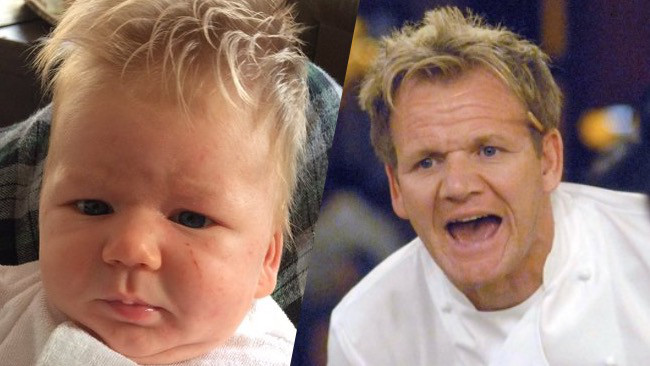

Homepage | Tournament | Virginia | Gordon Ramsay | PC Parts | Music

Gordon James Ramsay, OBE (born 8 November 1966) is a British chef, restaurateur, and television personality. Born in Scotland, he grew up in Stratford upon Avon, England. His restaurants have been awarded 16 Michelin stars in total. His signature restaurant, Restaurant Gordon Ramsay in Chelsea, London, has held 3 Michelin stars since 2001.
I watch his YouTube cooking tutorials and it is pretty entertaining. Cooking has been an interest of mine ever since.